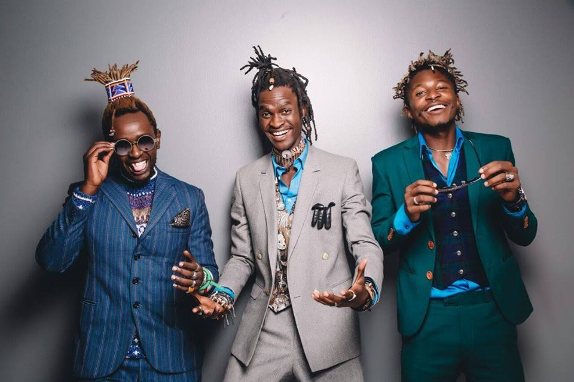
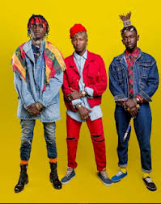
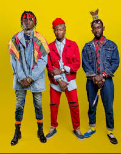
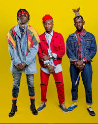

Images
 

H_art the Band is a Kenyan boy-band that has taken the music industry by storm, not only within the country, but they are receiving accolades internationally with their beautiful ballads and intriguing rhymes that you can't help but sing-along to.
H_art the Band is made up of three young Kenyan men comprising Kenneth Muya, Wachira Gatama and Mordecai Mwini. They met back in 2012,which is still when the band was formed, when they met at the Kenya National Theater during a play on cancer awareness. They were each performing different skits, and after the show, Kenneth played soundtracks on his guitar and after finding themselves idle, alas, the band was born. The name of the band came about after the young men realized they shared the same passion for music,spoken word/poetry, fashion and arts in general. Thus, the name was coined, and the underscore signifies the bridge between the heart and art because aside from music, they do art as well. H_art the Band is heavily inspired by day-to-day experiences, picture soulful, African-inspired,acoustics, smooth, harmonized vocals fused with a touch of well-knit spoken word poetry all blended into one thick pastry of art and then served with a witty sense of humor. Their music speaks to generations, from the young to the aged, male to female and even across races. Mordecai and Wachira come up the poetical rhymes as self-taught guitarist, Kenchez compliments their rhymes with smooth African tunes, while Mordecai adorns their jams with his heavenly vocals, thus creating a fresh genre they like to call Afro-Poetry.
